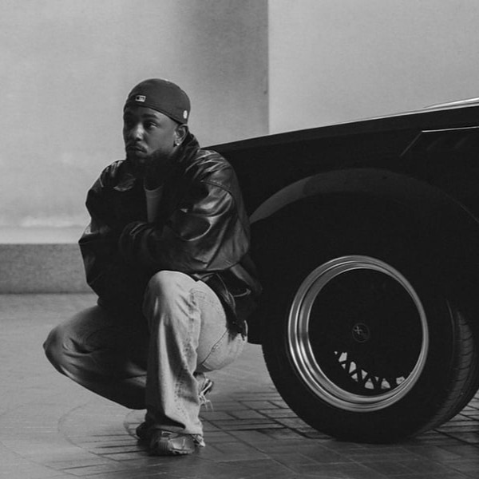
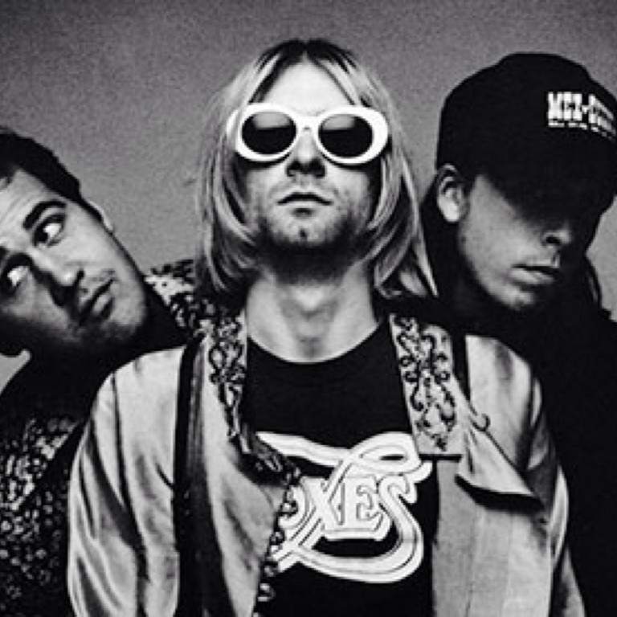
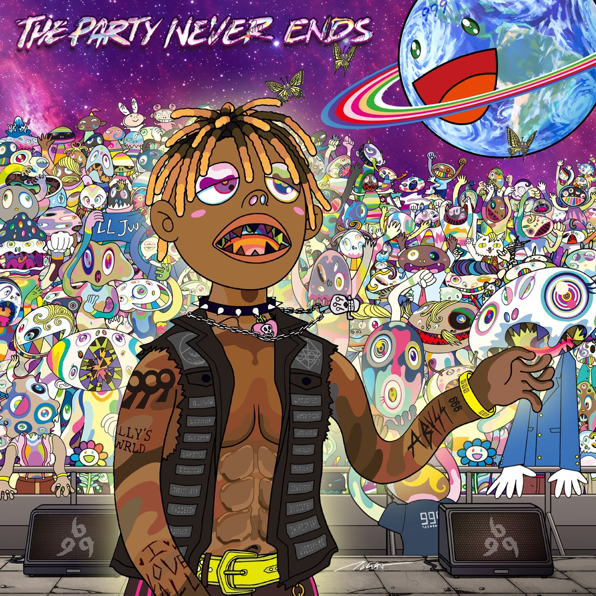

Artists & Bands
|
Juice WRLD
|
Juice WRLD made raw, honest music about heartbreak and mental struggles that really hit. He could freestyle like no one else and turn his feelings into catchy, emotional songs. Even though he passed too soon, his music still connects and sticks with you. |
|

Kendrick Lamar
|
Kendrick Lamar tells real stories about life and society with skill and emotion. His lyrics hit hard, making you think while still making you feel. |
|
Laufey
|
Laufey makes soft, jazzy songs that feel like cozy late-night confessions. Her lyrics are delicate and honest, making you really stop and listen. |
|

Nirvana
|
Nirvana basically created grunge, mixing raw emotion with messy, loud energy. Their songs felt real and unpolished, and their influence on rock is still everywhere today. |

girl in red
|
girl in red makes indie-pop that’s emotional, honest, and super relatable. Her songs about love, identity, and mental health hit even harder with her raw, DIY vibe. |
Albums

Graduation - Kanye West
|
Graduation is Kanye West at his biggest and most creative, blending hip-hop with electronic, stadium-ready sounds. Every song hits with energy while still telling his story—there’s not a bad track on it. |

Let Go - Avril Lavigne
|
Let Go is Avril Lavigne’s debut packed with pop-punk energy and relatable angst. It’s raw, honest, and still hits with that early-2000s rebellious attitude. |

The Fame - Lady Gaga
|
The Fame is Lady Gaga’s debut, full of catchy pop and bold, glamorous style. It’s fun, energetic, and set the tone for her unforgettable career. |
|

TPNE - Juice WRLD
|
The Party Never Ends is Juice WRLD at his rawest, full of melodic rap and emotional lyrics about life, heartbreak, and struggles. Packed with unreleased hits, it’s an emotional rollercoaster that still connects with fans. Not to mention it was released years after his death comprised of unreleased songs. |

It Was Written - Nas
|
It Was Written is Nas at his storytelling best, mixing clever lyrics with smooth, classic hip-hop beats. It’s full of street tales and reflections on life, making it feel real and timeless. |